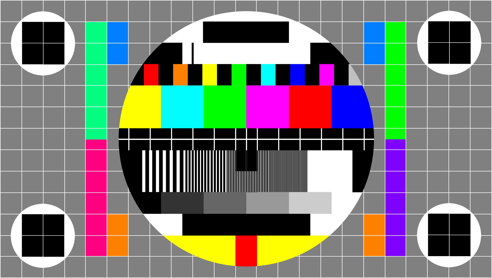

草繩，來自土地，由最日常、最唾手可得的稻草，經由人力搓揉、拍打製成。它看似柔軟，卻能承重，是先民最早的工具之一，也是編織共同文化與命運的技藝。
這條「草繩」，是 g0v 十年「嗨咖行動者」（High Agency）精神的具體展現：不坐等、不依賴，「反客為主」，親自動手自造。
十年拍（phah）草繩，這條歷經十幾年拍打的草繩，分支、編織、連結，構成了 g0v Summit 2026 的三大座標軸線：（開放透明，自主隱私）、（思辨監督，韌性連結）、（政府體制， 民間草根）。
在這裡，我們邀請你走進一個由草繩編織而成的立體空間。
你和每一個參與者基於自身的立場與價值，都是這空間中的一個「點」——這就是拍結（phah-kat，打結）。
拍結（phah-kat）不只是為了綁緊，更是為了學會鬆開——鬆動被動的姿態，鬆動依賴與恐懼，在危機與不確定的時代裡，重新練習「自救」與「互助」的肌肉。
當我們拋出手中的繩子，與他人對話，點就連成了「線」；
當無數條線交織，我們便撐起了「面」——這是一張溫柔接住彼此的吊床，也是一張充滿動能的行動網絡。
在這張由社群編織的「公民座標」上，原本孤立的節點形成了聚落，單線的對話演化成協作的生態系。它既是防禦危機的社會安全網，也是讓公民創意得以彈跳的基地。
臺北市南港區研究院路二段128號中央研究院 人文社會科學館
自 2012 年起，g0v.tw 台灣零時政府社群在「寫程式改造社會」的號召下，開啟了一場長達十餘年的公民黑客實踐。
我們以開放、透明、協作為核心，從 2014 年首屆「g0v 啥米」（Summit）至今，搭建了一座讓開放社群、政府、學界與公民跨界交流的橋樑。
期間，我們也經歷過無數社會挑戰、政治動盪，甚至各種「蛇咬」般的挫折與危機。
有人告訴我們，「一朝被蛇咬，十年怕草繩。」 但在這裡，我們將恐懼的「怕」，轉化為行動的「拍」（phah）
面對臺灣社會的傷痕，來自此方與彼端的威脅，我們拒絕陷入「怕草繩」的被動與畏縮。相反地，我們選擇捲起袖子，伸手抓起那條草繩，重新搓揉、拍打。
十多年過去，g0v 從最初的游擊式黑客松，長成了蓬勃的公民社群。
「十年」，不僅是時間的刻度，更是一種持續的行動與實踐——是將恐懼轉化為韌性的過程。
歷經十年拍打的草繩，不再是讓人驚恐的幻影，而是強韌而靈活的實體，它分支、編織、連結，不斷幻化與創造。
g0v 是一個草根式的公民社群，致力於加深公民對社會的貢獻以及彼此間的連結。透過 g0v 社群，你可以在這裡尋找志同道合的夥伴，以草根的方式實踐你的理念，並將成果以開放授權模式釋出，讓更多的人可以站在你的成果上接力賽跑。
將 gov 以「零」替代成為 g0v，從零重新思考政府的角色，也代表數位原生世代從 0 與 1 世界的視野。
如果有贊助意願，請洽詢 sponsorship@summit.g0v.tw